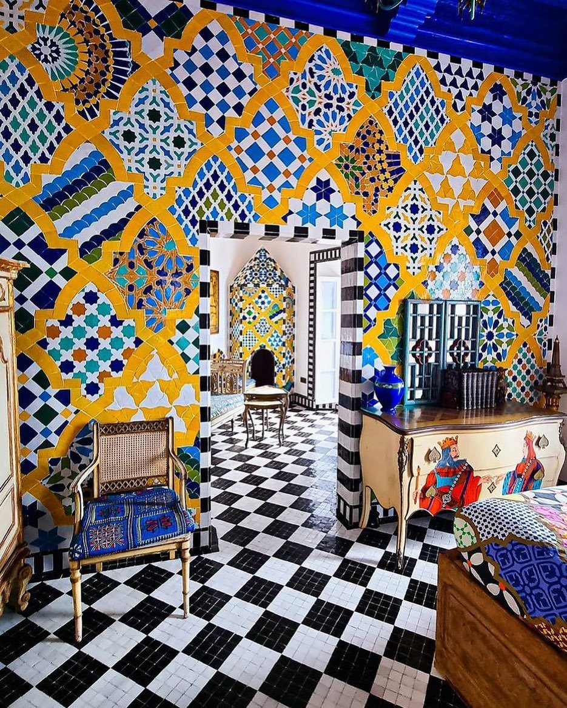
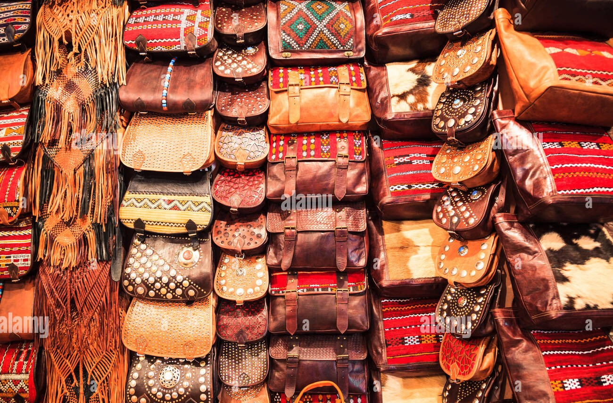
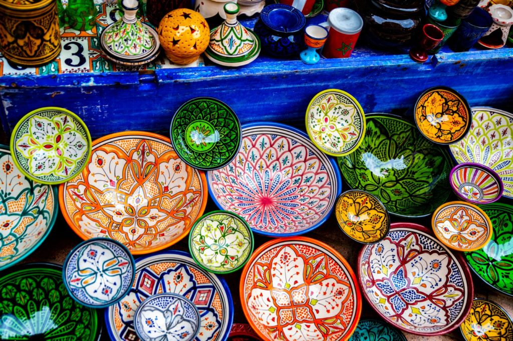
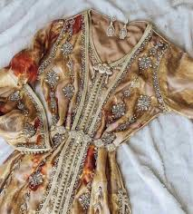
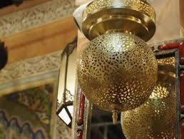

02 — Artisanat Marocain
L'Âme des Artisans
L'artisanat marocain est une expression vivante du génie créatif, transmis de génération en génération.

Zellij — Art de la Mosaïque
Carreaux de faïence...
🏙️ Fès · Marrakech · Meknès

Tapis Berbères

Maroquinerie de Fès

Poterie de Safi

Broderie & Caftan
